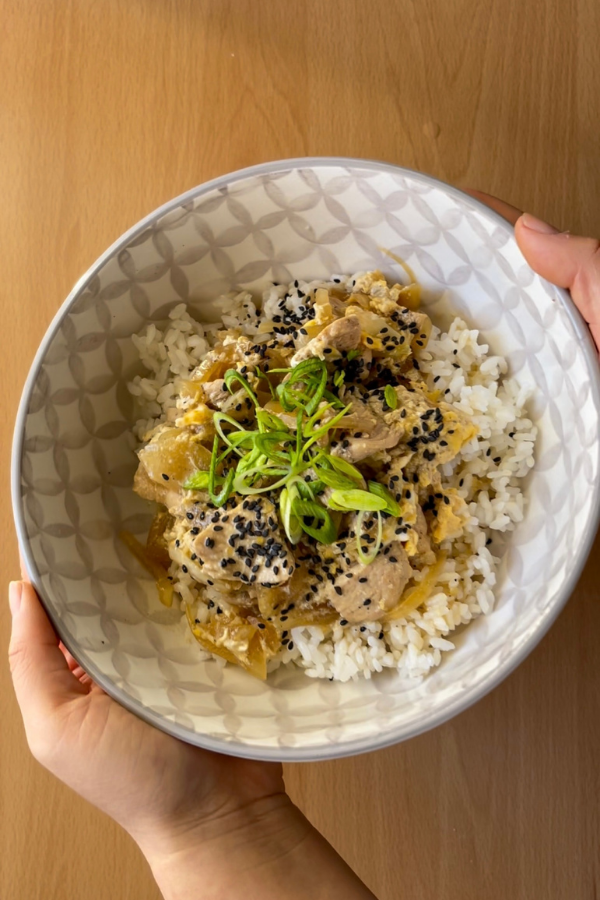
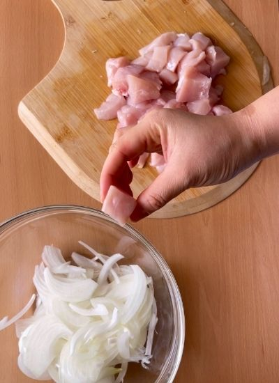
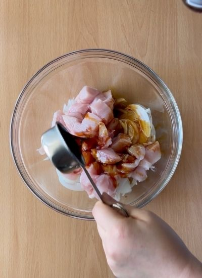
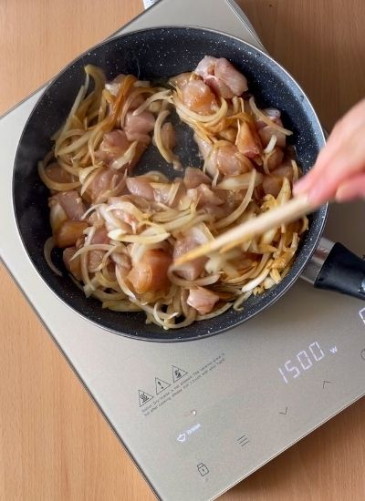
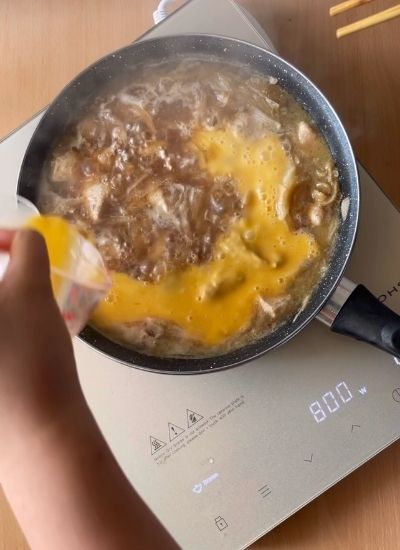
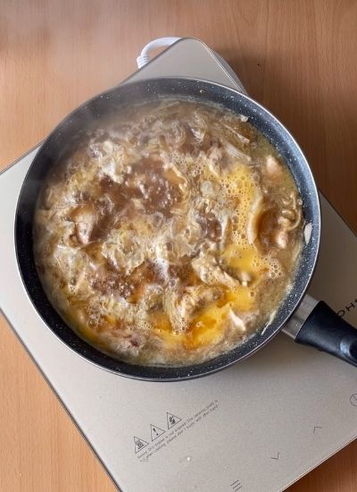

Por probar · Japonesa
← Recetas
Oyakodon (Pollo y Huevo)

Preparación
- Corta la cebolla en juliana fina y el pollo en dados de 1-1,5 cm.

- Marina pollo y cebolla con la soja, pimienta y azúcar durante 20-30 minutos.

- Mientras, cuece el arroz blanco.
- Calienta la mezcla marinada en una sartén 5 minutos. Añade un vaso de agua y cocina 3-4 min más hasta reducir un poco.

- Vierte los huevos batidos, retira del fuego, remueve y deja que el calor residual los cuaje en la salsa.

- Sirve el arroz de base y encima el pollo con su salsa. Decora con cebollino y sésamo negro.
